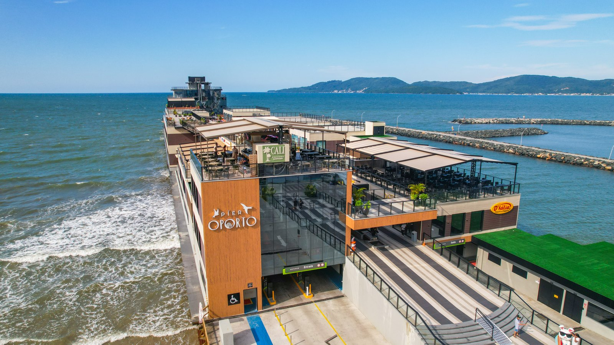

Itapema · Turismo
Itapema · TurismoItapema chama o píer de Píer Oporto no aviso oficial, e o nome que está na lei teve 64% de aprovação na consulta de 2024
A matéria que deixou em aberto o resultado desta enquete.
A Câmara de Vereadores de Itapema encerrou na segunda-feira, 21 de setembro, a consulta pública sobre trocar o nome do Píer Turístico da Foz do Rio Perequê Luiz Henrique da Silveira para Píer Oporto. A enquete ficou 15 dias aberta e deu 87,76% a favor da troca e 12,24% contra. O nome que está na lei hoje, o do ex-governador, também passou por consulta antes de virar lei, em 2024, e teve 64% de aprovação. É o mesmo píer consultado duas vezes, com 30 meses de distância e em sentidos opostos. A Câmara publicou o percentual das duas, e em nenhuma delas disse quantas pessoas votaram.
Em 30 segundos · Modo de Leitura, formato original Santa Informa
A Câmara de Itapema fechou uma consulta pública.
Foi na segunda-feira, 21 de setembro.
O assunto era o nome do píer da Foz do Rio Perequê.
Hoje ele se chama Luiz Henrique da Silveira.
A proposta é trocar para Píer Oporto.
A enquete ficou 15 dias aberta.
Deu 87,76% a favor da troca.
E 12,24% contra.
A proposta é do vereador Yagan Dadam (PL).
Agora ela pode virar Projeto de Lei.
Aí passa por comissões e por votação.
Só depois disso o nome muda de verdade.
O nome de hoje vem da Lei 4.515, de 2024.
Ele também passou por consulta pública.
Naquela vez, teve 64% de aprovação.
Entre uma consulta e outra, 30 meses.
A diferença entre os dois placares é de 23,76 pontos.
Essa conta é nossa.
A fachada do prédio já traz o letreiro Pier Oporto.
É o nome comercial de quem opera o local.
A Câmara não disse quantas pessoas votaram.
Nem agora, nem em 2024.
O píer fica na divisa com Porto Belo.
São 180 metros sobre o mar.
Poder PúblicoPublicada em Redação Santa Informa

A Câmara de Vereadores de Itapema encerrou na segunda-feira, 21 de setembro, a consulta pública sobre mudar o nome do Píer Turístico da Foz do Rio Perequê Luiz Henrique da Silveira para Píer Oporto. A enquete ficou 15 dias aberta à votação popular. O resultado saiu 87,76% a favor da troca e 12,24% contra. Com isso, a proposta pode ser discutida como Projeto de Lei e seguir o caminho normal da Casa: leitura em plenário, análise das comissões, discussão e votação. Se os vereadores aprovarem e o Executivo sancionar, aí sim o nome oficial muda. A iniciativa é do vereador Yagan Dadam (PL), e a justificativa diz que "Píer Oporto" seria um nome simples e objetivo, ligado à identidade do equipamento turístico e à atividade náutica do local.
O nome que está valendo veio da Lei nº 4.515, de 2024, e ele também passou por consulta pública antes de entrar na lei. Naquela vez o nome do ex-governador teve 64% de aprovação, e o plenário aprovou a denominação em 6 de fevereiro de 2024, números que levantamos quando a Câmara abriu esta segunda enquete. A comparação é nossa: o mesmo píer foi ouvido duas vezes, com 30 meses de intervalo, e os dois resultados apontam para lados contrários. A aprovação saiu de 64% para 87,76%, uma distância de 23,76 pontos. Luiz Henrique da Silveira, o homenageado do nome atual, nasceu em Blumenau em 25 de fevereiro de 1940, governou Santa Catarina em dois mandatos seguidos, de 2003 a 2010, e foi ainda senador, deputado federal e prefeito de Joinville. Morreu em 2015.
A foto que a própria Câmara publicou com o comunicado mostra a fachada do prédio com o letreiro Pier Oporto, que é o nome comercial de quem opera o equipamento. Em 17 de setembro nós já tínhamos mostrado que o nome fantasia aparecia em aviso oficial da Prefeitura, antes de qualquer mudança na legislação. O que o resultado de segunda-feira faz é encurtar essa distância entre o nome que está na lei e o nome que está na parede, no aplicativo de mapa e na boca do morador. O píer fica na divisa de Itapema com Porto Belo, tem 180 metros de estrutura sobre o mar e 6,6 mil m² de área prevista em projeto, com 17 pontos comerciais, 16 vagas para barcos e 231 vagas de estacionamento.
O resumo de 30 segundos está no topo e a versão completa é o texto acima. Aqui ficam as três leituras da casa sobre o mesmo assunto.
Clara, a otimista
Tem uma coisa boa aqui que vale registrar: perguntaram. A lei manda ouvir a população antes de batizar bem público, e a Câmara ouviu, deixou a enquete quinze dias no ar e publicou o resultado com percentual dos dois lados. Nem todo lugar faz isso com nome de praça, quanto mais com o cartão-postal novo da cidade.
E o resultado é claro. Quase nove em cada dez votos foram na mesma direção. Quando o nome que o morador já usa no dia a dia é o mesmo que ele escolhe na consulta, a chance de o endereço ficar fácil de achar e de explicar para quem chega de fora é grande. Para uma cidade que vive de receber gente, isso não é detalhe pequeno.
Seu Prudêncio, o criterioso
Merece atenção o que o comunicado não traz. Percentual sem o número de votantes conta metade da história: 87,76% de 100 pessoas e 87,76% de 5 mil pessoas pesam de formas bem diferentes numa decisão que vai virar lei municipal. O mesmo se aplica aos 64% de 2024, que também nunca vieram acompanhados do total.
Vale acompanhar mais dois pontos. O primeiro é a tramitação: a consulta não muda nada sozinha, e até agora o Projeto de Lei não apareceu protocolado. O segundo é o custo, que ninguém calculou em público, de trocar placa, sinalização e documento de um equipamento que acabou de abrir. Uma sugestão útil, e barata: publicar o número de votos junto do percentual, nesta e nas próximas enquetes. O sistema já conta, é só mostrar.
Registro o que está bem feito. A Casa usou o instrumento que a lei prevê, cumpriu o prazo, divulgou o resultado no mesmo canal em que abriu a consulta e disse qual é o próximo passo. Foi por causa dessa publicação que deu para comparar as duas consultas nesta matéria. Processo que deixa conferir é o que permite discussão de verdade.
Caco, o sarcástico
Em 2024 a cidade foi consultada e 64% disseram que sim, o píer devia levar o nome do ex-governador. Trinta meses depois a cidade foi consultada de novo e 87,76% disseram que não, melhor trocar. Itapema não muda de ideia: Itapema reforma a ideia inteira, com fachada nova.
E o melhor detalhe está na foto oficial. O letreiro do nome que ainda vai ser votado já está montado, em madeira, iluminado, virado para o mar. A lei que corra atrás.
Agora sério, porque aqui tem informação útil: até a Câmara votar e o prefeito sancionar, o nome oficial continua sendo o antigo. Quem for registrar contrato, endereço de entrega ou documento com o endereço do píer ainda escreve o nome comprido, o do ex-governador. A parede pode ir mais rápido que a lei, mas o cartório não.
Fontes: os 87,76% a favor, os 12,24% contra, os 15 dias de enquete, o encerramento em 21 de setembro, a autoria do vereador Yagan Dadam, a justificativa do nome, a citação da Lei nº 4.515 de 2024, os dados biográficos de Luiz Henrique da Silveira e o próximo passo da tramitação estão no comunicado "Consulta pública aprova nomeação do Píer Turístico da Foz do Rio Perequê Luiz Henrique da Silveira, como Píer Oporto", publicado pela Câmara de Vereadores de Itapema em 23 de setembro de 2026, lido e conferido nesta quinta-feira. Os 64% da consulta de 2024, a data de 6 de fevereiro de 2024, a abertura da enquete em 2 de setembro de 2026 e as medidas do píer estão nas nossas matérias sobre a abertura da consulta e sobre o uso do nome fantasia em aviso oficial. A diferença de 23,76 pontos entre os dois placares e os 30 meses entre as duas consultas são contas nossas, feitas sobre esses números. A ausência de enquete aberta na página de consultas da Câmara foi conferida por nós nesta quinta-feira, no portal da Casa.
Itapema · TurismoA matéria que deixou em aberto o resultado desta enquete.
 Itapema · Poder Público
Itapema · Poder PúblicoO começo da consulta que fechou nesta semana.
Como anda o ritmo de votação da Casa que vai decidir o nome.